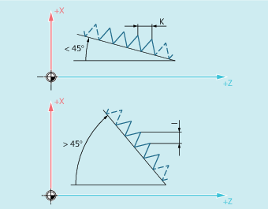

Vorschub beim Gewindeschneiden mit G33
Die Steuerung errechnet aus der programmierten Spindeldrehzahl und der Gewindesteigung den notwendigen Vorschub, mit dem der Drehstahl über die Gewindelänge in Längs- und / oder Planrichtung verfahren wird. Der Vorschub F wird bei G33 nicht berücksichtigt, die Begrenzung auf maximale Achsgeschwindigkeit (Eilgang) wird von der Steuerung überwacht.
Zylindergewinde
Das Zylindergewinde wird beschrieben durch:
Gewindelänge
Gewindesteigung
Die Gewindelänge wird mit einer der kartesischen Koordinaten X, Y oder Z im Absolut- oder Kettenmaß eingegeben (bei Drehmaschinen vorzugsweise in Z-Richtung). Zusätzlich sind Anlauf- und Auslaufwege zu berücksichtigen, auf denen der Vorschub hochgefahren bzw. reduziert wird.
Die Gewindesteigung wird unter den Adressen I, J, K eingegeben (bei Drehmaschinen vorzugsweise mit K).
Plangewinde
Das Plangewinde wird beschrieben durch:
Gewindedurchmesser (vorzugsweise in X-Richtung)
Gewindesteigung (vorzugsweise mit I)
Kegelgewinde
Das Kegelgewinde wird beschrieben durch:
Endpunkt in Längs- und Planrichtung (Kegelkontur)
Gewindesteigung
Die Kegelkontur wird in kartesischen Koordinaten X, Y, Z im Bezugs- oder Kettenmaß eingegeben, bei der Bearbeitung auf Drehmaschinen vorzugsweise in X- und Z-Richtung. Zusätzlich sind Anlauf- und Auslaufwege zu berücksichtigen, auf denen der Vorschub hochgefahren bzw. reduziert wird.
Die Angabe für die Steigung richtet sich nach dem Kegelwinkel (Winkel zwischen Längsachse und Kegelmantel):
Siehe auch:
Gewindeschneiden mit konstanter Steigung (G33, SF)